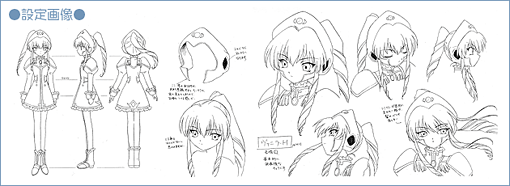
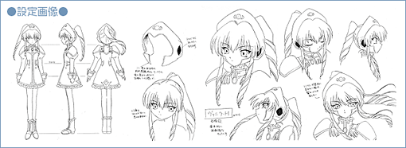

|
||||||||||||||||||||

| ●何为 香草 |
|
――漫画及游戏方面（GA） 崇拜神，谦虚且温和的月天使队中最年少。几乎不主动表达自己的主张和感情，因此有很多让人猜不透她在想什么的一面。总是带着纳米机器的集合体纳米机器宠物。使用纳米机器的医疗技术对月天使队有着重要的意义。 ――动画方面（GA） 没有纳米机器宠物，取而代之的是随身携带集失落科技精华于一身的超级计算机·诺玛德。诺玛德爱说话，因此她比原作更加沉默寡言。她信仰的宗教也变得更加神秘。 |
© BROCCOLI

|
|||||||||||||||||||||||||||||||||
|
© BROCCOLI |
|||||||||||||||||||||||||||||||||